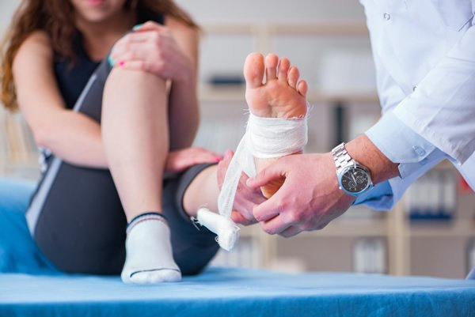
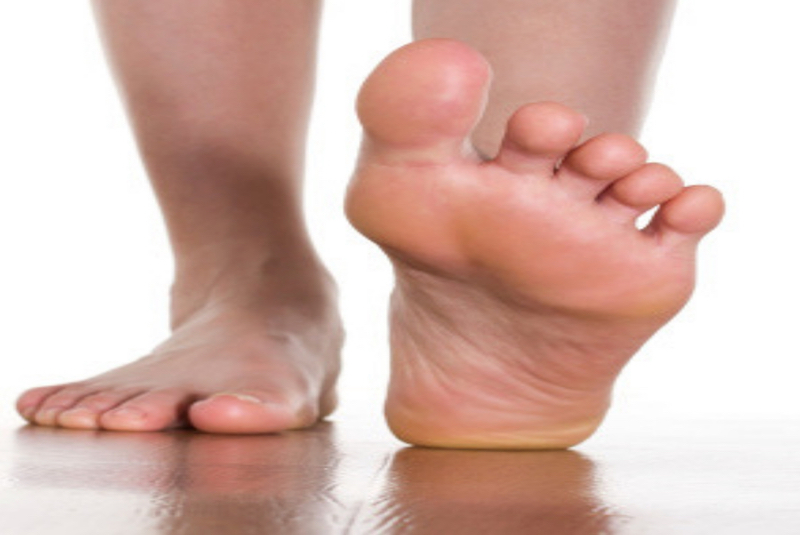

Services
Wide Range of Services
Services Below
 Sports Related Injuries Many sports are hard on the feet because of quick repetitive movements and/or increased exposure to injury or trauma. We treat injuries that result from a range of sports; football, running and track, basketball, rugby, lacross, golf, volleyball, tennis and field hockey. We diagnose and treat many of those injuries that may not involve significant damage, but can still cause considerable pain. Should you present with a more serious problem, such as a torn or ruptured ligament or tendon requiring specialist surgical repair, don’t panic either, we will advise and refer you accordingly.
Foot Athritis: Foot and ankle injuries are common, particularly among sports enthusiasts. Many of these injuries can be treated with stem cell therapy. Ankle sprains and injuries which aren’t too severe can be treated with PRP procedures which will heal damaged tissues and tighten the loose ligaments. Surgical treatment for common ankle injuries and arthritis include ankle arthroscopy, fusion of ankle bones and tendon grafts. These procedures can lead to a painful post-operative recovery.